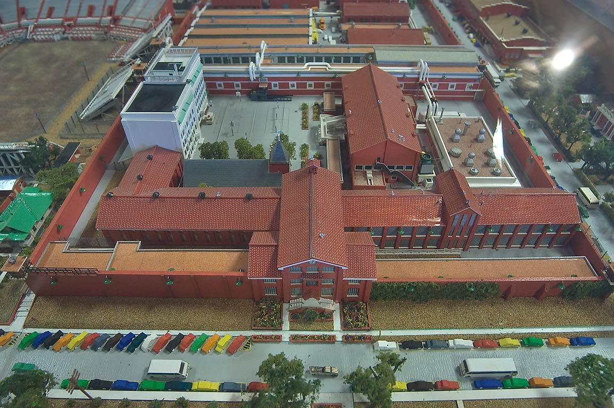

Книги
КнигиГлава 1. С улиц за решетку
Перевод для VSplanet.net
— Ни с места! Стоять и не двигаться! Руки на голову!
Я замер. В голове была лишь одна мысль: и что дальше?
Реальностью становился мой самый страшный ночной кошмар. Я не мог поверить, что это происходит, но все было наяву — в паре метров от входной двери. Я не видел ничего кроме пистолетов, которые смотрели прямо на меня.
Два полицейских уложили меня на землю. Один из них прижал меня коленом. На мои запястья надели наручники. Один из них подхватил меня под руки и поднял, лениво зачитывая мои права. Я реагировал так, как меня учили с раннего детства — изображал полное неведение.
— Эй, начальник, что происходит? Вы чего?
В голове промелькнули слова моей сестры Билли Джин, которые прозвучали настоящей уличной мудростью.
— Если соврал, придерживайся первой лжи.
Так что даже оказавшись в полицейской машине, я продолжал повторять:
— Не понимаю, о чем вы говорите. Вы взяли не того парня.
Я был убежден, что никто меня не опознает. Но я ошибался. Когда меня выставили на опознание, человек по ту сторону стекла сразу указал на меня. Ну что ж, поделом мне. Как выяснилось потом, это был не абы кто, подружка моего товарища Зака, которая не смогла устоять перед наградой в пять тысяч долларов и сдала нас.
Я был обречен.
Даже если бы Робин ничего не рассказала полиции, наша поимка была делом пары дней. В конце концов, мы сами оставили свои фирменные знаки на транспортной карте.
Меня отправили в тюрьму округа Харрис под залог в сто тысяч долларов. Чтобы хотя бы начать разговор о выходе на свободу, нужна была хотя бы десятая часть. Короче говоря, я был загнан в угол и оставлен без выхода.
Билли Джин пришла навестить меня. Она дала мне ценные советы, как себя вести, исходя из своего взгляда на закон. Она сказала, что будет моим адвокатом и позаботится обо мне. Я ловил ее каждое слово, потому что для меня она всегда была в прямом смысле слова неприкасаемой. Перед тем, как уйти, она сказала, чтобы я не вешал нос.
Но даже с ее подбадриванием, я чувствовал себя потерянным. И это лишь усились после допросов. Все было как это показывают по телевизору: маленькая комнатка, стул и стол. Хороший полицейский и плохой полицейский. Один пытался быть мне другом, предлагая то кофе, то сигарету. Другой угрожал мне, напоминая, что если я не расколюсь, мне крышка. Я не повелся. Сидел с невозмутимым выражением лица и повторял, что это был не я, и что они не того повязали.
И я почти справился! Я не путался в показаниях, отказывался что-либо признавать — это серьезно затруднило работу обвинения. А учитывая, что я отказался идти на сделку с правосудием, они были обязаны доказать, что я виновен! Я же изображал саму невинность и мое нахождение в округе Харрис затягивалось. Если честно, в тюрьме мне было паршиво — участились приступы паники.
Я позвонил Билли Джин и расплакался.
Она сказала, чтобы я успокоился. Адвокаты работали над моим делом, поэтому надо было просто подождать.
Но дни превращались в недели, недели — в месяцы. Постепенно я начал привыкать к тюрьме. Я привык к распорядку, к столовой, к двору. Меня тянуло обратно на волю. Каждую ночь в своей камере я тянул руки к потолку, а перед глазами снова возникал день моего ареста.
Это было 9 апреля 1987 года. Обычный солнечный Хьюстонский полдень. Вместе с моей подружкой Ред — настоящей красоткой африканских и азиатских кровей — мы отправились в кафешку. После того, как мы простились, я встретился с Заком в парке Макгрегора. Там мы провели остаток дня, ничем не занимаясь — просто курили травку и болтали. Когда стало прохладнее, я решил вернуться домой.
Когда я вернулся в квартирку на Уиллоу Крик, я почувствовал что-то странное. Было слишком тихо. Только ветер шелестел ветвями. Мимо прошли два обычных парня, я даже не обратил внимания. Когда я добрался до внутреннего дворика, я ускорился и кое-что заметил. Клён, стоявший прямо напротив моей двери, выглядел совершенно незнакомо. Я остановился и уставился на него. В голову начало приходить осознавание. Буквально отовсюду начали появляться копы. Мне казалось, их сотни! Будто я смотрел по телевизору сцену уличных беспорядков. Не хватало только вертолетов над головой и спецназовцев, спускающихся по веревкам. И каждый коп орал на меня. Меня окружили со всех сторон, на меня нацелили кучу пистолетов. Каждый был готов разнести мне голову.
Когда эта огромная куча народа положила меня лицом в землю, я понял, что все кончено. Меня отправили в тюрьму округа Харрис и это стало началом долгого и незабываемого путешествия: меня провели через центральный вход, у меня взяли отпечатки, сфотографировали для дела. Да, я прекрасно осознаю, что та фотка была ужасной и над моей ухмылкой будут ржать еще очень долго. После того, как было покончено с формальностями, меня бесцеремонно швырнули к остальным заключенным. Я начал потихоньку приходить в себя: итак, тюрьма; насколько плохи мои дела? В принципе, я всегда легко приспосабливался к новым условиям, так что я был готов и к тюрьме.
Это было помещение 10 на 10. Был телевизор, небольшое окошко, через которое пробивалось совсем чуть-чуть света. В центре были несколько столиков. Моя персональная клетка была два метра в длину и ширину с большой железной дверью. Всего таких клеток было около пятнадцати, в каждой обитали по два человека. Мне достался какой-то латиноамериканец из Чикаго по имени Петер. Его судили за убийство. Петер был крутым парнем, мы подружились и стали неплохими приятелями. Мы вместе отжимались, что меня даже немного мотивировало, поскольку он был весьма раскаченным парнем. В общем, я его зауважал.
Но в остальном делать было совсем нечего. Мы разговаривали, играли в шахматы, смотрели телек. На один час в день нас выпускали во двор — всегда была адская жара, но мы проводили время, играя в баскетбол на небольшой площадке. У нас не было подходящей обуви, поэтому мы играли босиком, постоянно поскальзываясь, это было очень смешно.
Тюрьма не была таким уж страшным местом, было очень скучно. Когда кому-то из нас передавали травку, мы курили. Другим спасением была музыка. Я постоянно возился с маленьким радиоприемником и стал своеобразным ди.джеем. Мне нравились РнБ и классическая музыка, но тогда я с удивлением обнаружил, что мне нравится кантри! Моим любимым музыкантом стал Рэнди Трэвис.
В публикации на VSplanet здесь было видео.
Мои подельники тоже оказались в округе Харрис. Но у нас было мало шансов пересечься, поэтому виделись мы разве что на допросах и заседаниях суда. Те моменты, когда я видел знакомое лицо, были очень странно-приятными. Мы приветливо кивали друг другу, строили рожи. Иногда удавалось переброситься парой слов. Зак всегда пытался подбодрить меня.
— Чувак, забей. Бук, мы выберемся, понял? Ты не заслуживаешь тут находиться. Я о тебе позабочусь!
Зак был из старой гвардии. У него уже были две ходки, он не хотел, чтобы и меня ожидала такая же участь. Он не хотел, чтобы тюрьма сломала мою жизнь, заставляя меня каждый раз собирать ее по кусочкам. Зак пытался взять всю вину на себя, чтобы помочь мне, и я этого не забуду никогда. Серьезно, сколько людей будут согласны удлинить свое нахождение в тюрьме, чтобы помочь другому?
Но как бы самоотверженно он себя ни вел, к его словам никто не прислушивался. Нет, конечно же, нас внимательно допрашивали, наши ответы записывали, обвинение видело, что прежде я никогда не привлекался, но нас хотели посадить всех троих.
Восемь месяцев в тюрьме округа Харрис измотали меня. Я вспоминал свою маму, которая умерла, когда мне было 13. Я вспоминал ее слова каждый день. Она часто говорила мне:
— Малыш, есть хорошее и есть плохое. Нет никаких оттенков между ними. И если ты не поймешь этого, ты окажешься вт юрьме.
Я пришел к осознаванию, что оказаться за решеткой было моей кармой. Я заслужил это и готов был принять это без злобы и обиды. Я хотел лишь, чтобы все было правильно.
Над моим делом работал Гейб Ньехаас, которого нашла Билли. Он убеждал меня пойти на сделку, и мы начали обсуждать этот вариант. Это был высокий тощий белый парень с широким лицом. Он был опытным юристом, я уважал его и полностью ему доверял. Он сказал, что лучшим решением для меня будет признать вину. Но он сразу же предупредил о главном факторе: судья Тед По.
Я провел достаточно времени в тюрьме Харрис и видел, как протекали суды других парней. Все дико боялись судью По. Он отправил за решетку не один десяток таких как я. Его приговоры были особенно жесткими. И как я ни молился, чтоб избежать его, именно По был назначен судьей по моему делу. Если бы начался суд, у меня не было ни пол-шанса. Гейб сказал, что у меня есть два варианта: признать вину за вооруженное ограбление и принять любой приговор, который он озвучит. Или же добиваться суда.
Со всеми уликами против меня, включая показания свидетелей и подставу Робин, соглашаться на суд присяжных было равноценно самоубийству. Меня бы признали виновным и выписали срок от 5 до 99 лет. А это значило провести за решеткой от 10 до 50 лет. Я даже думать о таком не хотел.
Гейб поработал с обвинением и договорился, что я могу признать вину лишь по двум пунктам. В этом случае мне светили по пять лет за каждый из них, но эти сроки шли бы параллельно. Это также означало, что в случае хорошего поведения я мог бы освободиться через 2 или даже 1.5 года! Я раздумывал меньше минуты.
Девять месяцев, которые я уже провел в тюрьме Харрис, мне бы естественно зачли. Так что я понимал, что мне светят еще 12-14 месяцев. Я подписал нужные бумаги, полностью признавая свою вину.
При всем моем беспокойстве я принял приговор как возможность наконец-то примириться с самим собой, принять свой проступок и начать готовиться к новой жизни.
В общем, этот день настал, я попрощался со своими друганами и надел кандалы, которые кроме меня также сковывали еще шестерых ребят. Они были в оранжевых костюмах, кандалах, мы вместе загрузились в автобус Техасского департамента правосудия и отправились в неизвестность. Мне до последнего не говорили, в какую тюрьму меня отправят, так что я в прямом смысле слова ехал в никуда. Руки вспотели, но я не подавал виду. Заключенные чуят страх и слабость за милю. Так что я не хотел открывать этот ящик Пандоры.
Сначала нас привезли в Тюрьму Хантсвилла. Прозвище этого заведения было «стена» — из-за знаменитой стены из красного кирпича, возведенной еще в 1849 году. Любой техасец, отправляющийся за решетку, проходит через Стену: там оформляют бумаги, сдают анализы крови, мочи, проверяют зубы и проходят медосмотр, чтобы окончательно решить участь заключенного. Я провел в Хантсвилле не больше недели, но я в полной мере прочувствовал разницу между настоящей тюрьмой и тем заведением в округе Харрис. Как только я зашел внутрь, эта разница буквально ударила меня по голове. Клетки, расположенные в четыре этажа, в воздухе было очень странное чувство: Стена была и остается тюрьмой, где приводят в исполнение наибольшее количество смертельных приговоров. Я буквально кожей чувствовал панику и смерть вокруг меня. Если в мире и есть тюрьмы с призраками, Стена — первая из них.

Моя клетка была 3х4 метра, в ней был небольшой стальной унитаз и койка. Стены были исчерчены непонятными каракулями, некоторые из которых были там аж с 70х! Они вогнали меня в депрессию. Осознание того, сколько времени я потеряю, давило на меня огромным грузом.
С остальными заключенными я старался быть дружелюбным. Я не хотел показаться злобным или интровертом — это привело бы к сплошным проблемам. В тюрьме постоянно идет борьба — все проверяют, насколько ты силен психически. От этого зависит уважение к тебе — все как на улицах, к чему я был приучен с детства. Все просто, на самом деле. Если будешь вести себя достойно, к тебе не будут лезть.
Я всегда хорошо сходился с людьми, где бы я ни оказался. Кроме того в тюрьме было не так много свободного времени, чтобы вляпаться в конфликты с другими заключенными. Мы были заперты 22 часа в сутки каждый из семи дней, что я там провел.
Большую часть времени я провел, глядя в потолок. Не было никакого двора, никаких залов. Ни шахмат, ни домино. Было только время. Сходить поесть, помыться и дальше смотреть в потолок. Я и смотрел. Было интересно, куда меня в конечном счете отправят, но никто ничего не говорил. Я был как Дороти в стране Оз: меня выдернули из родного дома и отправили в странно путешествие со странными персонажами вокруг. И эта дорога все никак не кончалась и не кончалась. Вот только моя дорога была вымощена не желтым кирпичом, а серым бетоном.
В конце концов, подошел мой последний день за Стеной. В четыре утра охранники разбудили меня и вместе с еще двадцатью заключенными повели наружу. В Коридорах было темно — лишь одна лампочка болталася высоко над нами. Я даже не видел ничьих лиц, видел лишь их очертания.
Когда мы вышли наружу, я с облегчением выдохнул воздух, который словно был наэлектризован от постоянной работы электрического стула. На нас снова надели большие кандалы и запихнули в старый автобус, где также приковали к сидениям. Вслед за этим мы выехали за пределы Стены.
Было еще раннее утро, я ничего не видел за мутными стеклами окон. Да и сам я спросонок был словно зомби. А затем нахлынула паника. Все молчали, кто-то засмеялся. Я подумал, как это вообще возможно? Хотя, видимо, это была их не первая поездка в тюрьму. Нас ожидала дорога километров в 50 — до Навасоты.
В публикации на VSplanet здесь было видео.
Мы свернули на Уоллес Пэк Роуд и остановились возле здания, где содержались около полутора тысяч заключенных, посаженных за самые разные преступления — от поджогов и изнасилований до убийств и вооруженных ограблений. Рассвело и вместе с этим пробудился и я. Автобус въехал во двор — и это была сложная процедура. Сначала мы проехали ворота, обмотанные колючей проволокой. Их закрыли и только после этого открыли другие ворота, через которые мы попали внутрь. Нас отстегнули от сидений и шеренгой завели в здание. По обе стороны от дорожки стояли вооруженные охранники — их было очень много. Я успел оглянуться, увидев, что снаружи стояли безжизненные деревья. Это был январь, было холодно даже по техасским меркам. До этого небольшого лесочка было несколько сотен метров пустой земли. Также я увидел несколько домиков, в которых проживала охрана.
Внутри с меня сняли оковы, одежду и подвергли тщательному досмотру. Это было, скажу я вам, неприятно. Унизительно? Да. Озлобляюще? Безусловно! После этого меня отправили в прачечную, где вручили одеяло и три комплекта тюремной формы, в которую входили белая рубашка, штаны и простыни. Я был обязан стирать их и гладить. Если эти нехитрые пожитки теряли или крали, заключенного ждал штраф. После этого я внимательно выслушал инструкции охранников.
Когда с процедурами было покончено, новеньких отвели в большой зал — размерами с половину футбольного поля. Там был такой затхлый воздух, будто двери не открывались вечность. Мы шли по коридору, по обе стороны которого были камеры. Все тамошние заключенные выглядывали посмотреть на вновь прибывших. В наш адрес неслась ругань. Я старался держаться. Все эти люди выглядели по-обычному и нисколько меня не пугали. Скорее, наоборот, многие из них выглядели отчаявшимися и подавленными. Тем не менее, самые молодые из них пытались скрыть это за агрессией. Я не смотрел им в глаза и держал голову высоко. Именно так я был намерен провести все свое время в Уоллес Пэк 2.
Через широко раскрытые двери нас отвели в спальное помещение. Там в два ряда стояли пятьдесят коек — как в казармах. Как только я добрался до своей, от меня отстали. Охранники не лезли к нам, дав понять, что это — тюрьма. И если вести себя хорошо, Все будет в порядке. Ну что ж, и на том спасибо.
Теперь я был вместе с 49 незнакомцами. Они болтались по помещению, сидели, лежали, болтали, курили. Никому до меня не было никакого дела, что меня вполне устраивало. Я тоже не обращал ни на кого внимания, сконцентрировавшись на своих мыслях. Я пока был новичком, но к этому я был готов.
Когда я оглянулся, я заметил, что туалет находился в конце помещения. И свои дела нужно было делать на виду у всех, что, конечно, было неприятно. Звуки и запахи были подобающие. Иногда в адрес тех, кто сидел на унитазах, отпускали шуточки, после которых все угорали как дети.
С другой стороны было некое подобие кухни, где можно было сварить кофе или сварганить закуску из того, что тайком или не очень приносили из кухни или покупали в местном ларьке. Там были консервы — куриные и рыбные, была заварная вермишель, соусы. Все это можно было сочетать самыми разными способами. Обычно брали макароны, добавляли курицы и сыр, заправляли соусом — и готово. Никто никого не ограничивал. Каждый считал себя дипломированным поваром и экспертом по созданию этих блюд. Я очень скоро понял, что нет ничего ценнее предметов, принесенных из ларьков! Их обменивали на сигареты, косяки, эротические журналы.
Мое прибытие было скучным. Я попал в тихий и спокойный блок. Ну и не стоит забывать, что и я был выше среднего и достаточно подкачен. Было видно, что остальным хватало бросить на меня один взгляд, чтобы принять решение со мной не связываться. Я не был каким-то качком или бойцом, но мой внешний вид был серьезен. Если бы я нервничал, переживал или боялся, это бы заметили и ко мне бы обязательно начали докапываться.
Я сбросил вещи и начал устраиваться. Застелил койку, поставил фотографию Ред, которую не видел с апреля прошлого года. Я лег и снова посмотрел в потолок, пытаясь собрать мысли в кучу. Все было серьезно. Я оказался в тюрьме. В настоящей тюрьме. Мысли о Ред и о том, как ей нравились мои крутые замашки, напомнили мне о том, как я проводил раньше вечера и ночи, куря травку и пересчитывая нарко-деньги. Именно так и было задумано дело, из-за которого я оказался в тюрьме. Но я не намерен был к этому возвращаться.
Около 11 вечера выключили свет, но я еще не был готов ко сну. Моя койка быа в середине зала и я словно бы находился в больничной столовой вместе с кучей храпящих, кашляющих, чихающих и шепчущих мужиков. Меня наполнили безнадега и сожаление. Во что, черт возьми, я ввязался? Как я в это вляпался? Мне всего 22 года, а я уже был осужденным преступником. Я подумал, что меня словно бы вычеркнули из мира насовсем. Хотелось самому себе поддать пинка.
В комнате было темно, но я видел, как другие парни бродят по помещению, занимаясь своими делами. Кто-то сидел небольшой кучкой, пуская по рукам косячок, кто-то тихонько говорил о том, что будет после возвращения на свободу. Кто-то готовил поесть. Выключенный сет не означал, что все должны спать.
Около часа я смотрел в никуда, после чего задремал. Мне приснилась мама и я снова вспомнил ее слова:
— Если ты не прекратишь, тебя или убьют, или упрячут за решетку.
Впервые в жизни я почувствовал, как сильно мне ее не хватает. Я думал и о других членах семьи — о братьях и сестрах. О том, как нас сводила и разбрасывала жизнь. За всеми этими мыслями я провалился в сон.
Оглавление книги